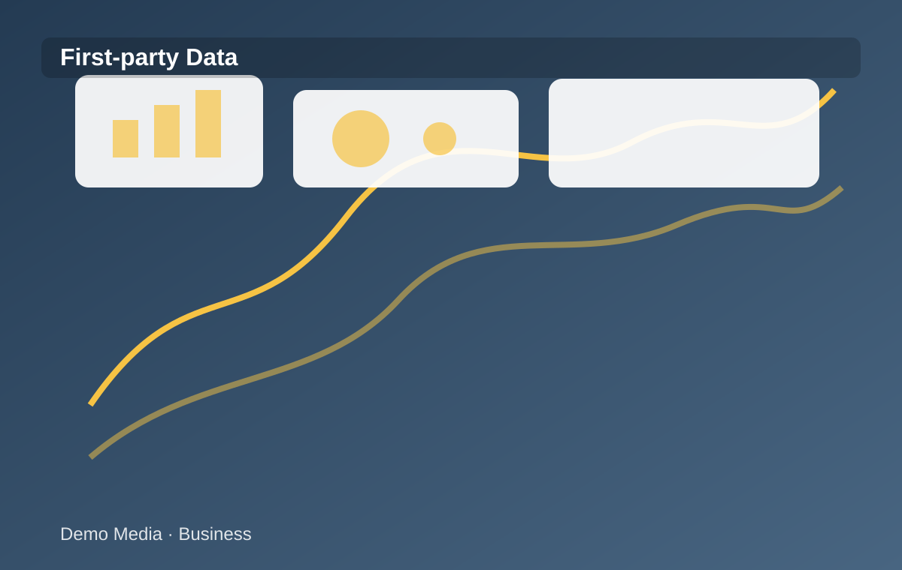

NEGÓCIOS
Dados próprios ganham espaço nas estratégias de mídia
Empresas reorganizam infraestrutura e mensuração para um cenário com mais privacidade.

A evolução do mercado digital está levando publishers a revisar como organizam conteúdo, audiência e inventário publicitário.
Nesse cenário, a estrutura técnica deixa de ser apenas operacional e passa a influenciar decisões comerciais, mensuração e ativação.
Times de mídia e tecnologia trabalham de forma mais próxima para garantir que cada espaço tenha nomenclatura, contexto e regras claras.
A organização também facilita testes, troubleshooting e leitura de performance em diferentes ambientes e formatos.
Com isso, o publisher ganha mais controle sobre como seu inventário é comercializado e como cada campanha é entregue.
← Voltar para a Home